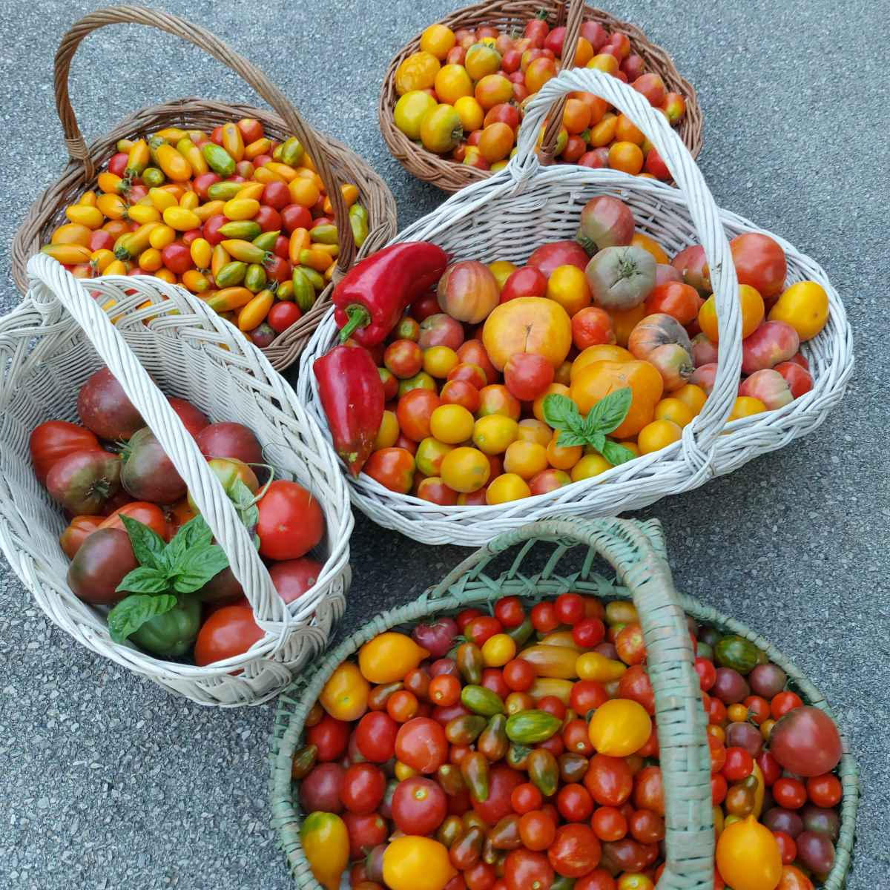
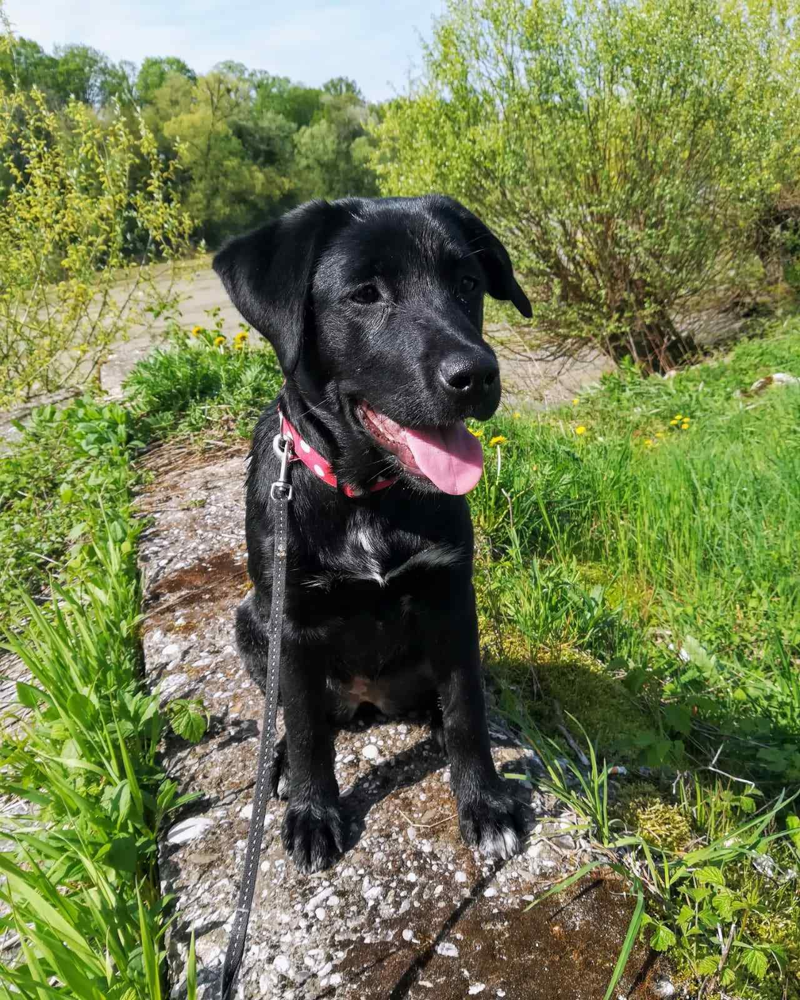

I have a wide range of hobbies that bring joy, creativity, and balance into my life.
One of my greatest passions is reading and collecting books. There's something deeply comforting about holding a book in your hands, turning its pages, and getting lost in a story or learning something new. Over the years, my personal library has grown into a collection that reflects my curiosity and love for literature.
Gardening is another hobby that brings me great satisfaction. Whether I'm planting herbs, vegetables, or flowers, working with soil and watching things grow gives me a sense of calm and purpose. It's a rewarding process that connects me with nature and teaches patience and care.
I also love creating natural cosmetics. Blending oils, herbs, and other organic ingredients to make my own skincare products is both a creative and sustainable practice. It feels good to know exactly what I'm putting on my skin, and even better when I can share these homemade products with friends and family.
Daily walks with my dog are a cherished part of my routine. Not only is it a time for exercise and fresh air, but it's also a moment to disconnect from the busy world and simply enjoy the present moment. My dog, Bagi, is not just a companion—she's a source of joy, motivation, and unconditional love.
These hobbies enrich my life and reflect my values: curiosity, creativity, connection with nature, and mindful living.